Warning: package 'ISwR' was built under R version 4.5.1
（一）掌握绘图颜色的使用方法。
（二）掌握直方图hist函数。
（三）掌握条形图barplot函数。
（四）掌握饼图pie函数。
（五）掌握箱线图boxplot函数。
（六）掌握散点图plot函数。
用ISwR中数据集nickel.expand中的变量age1st绘制直方图，绘制的直方图满足下面要求，效果如图1所示。
绘制20个柱状条。
边框颜色为红色。
填充颜色为蓝色。
填充线为每英寸20条，角度为负60度。
图形标题为“镍暴露年龄直方图”。
x轴的标题为“年龄”。
y轴的标题为“人数”。
x轴的显示区间为[10,50]。
y轴的显示区间为[0,600]。
Warning: package 'ISwR' was built under R version 4.5.1
按照下面的要求绘制另一个直方图，结果如图2所示。
先用set.seed(10000)产生随机数种子，然后用rnorm产生1000个随机数x，且rnorm的均值是3，标准差2，即 set.seed(10000) x <- rnorm(1000, 3, 2)
把x的值域进行10等分（即先求最大数和最小数，再10等分，也可以用range函数求最大数和最小数）。
然后统计10个区间的频数（提示：可以用cut和table函数，也可以用cut和tapply实现），把得到的频数向量转换成字符串向量，赋值给变量lbs。
用hist绘制x的直方图，每个柱状条标明相应的频数，即设置labels = lbs，填充颜色为colors()中的第51到60号颜色，即colors()[51:60]。
在hist函数中使用cex.main=2，cex.axis =1.5，cex.lab = 1.5分别设置图标题、坐标轴刻度、坐标轴标签的字体大小。
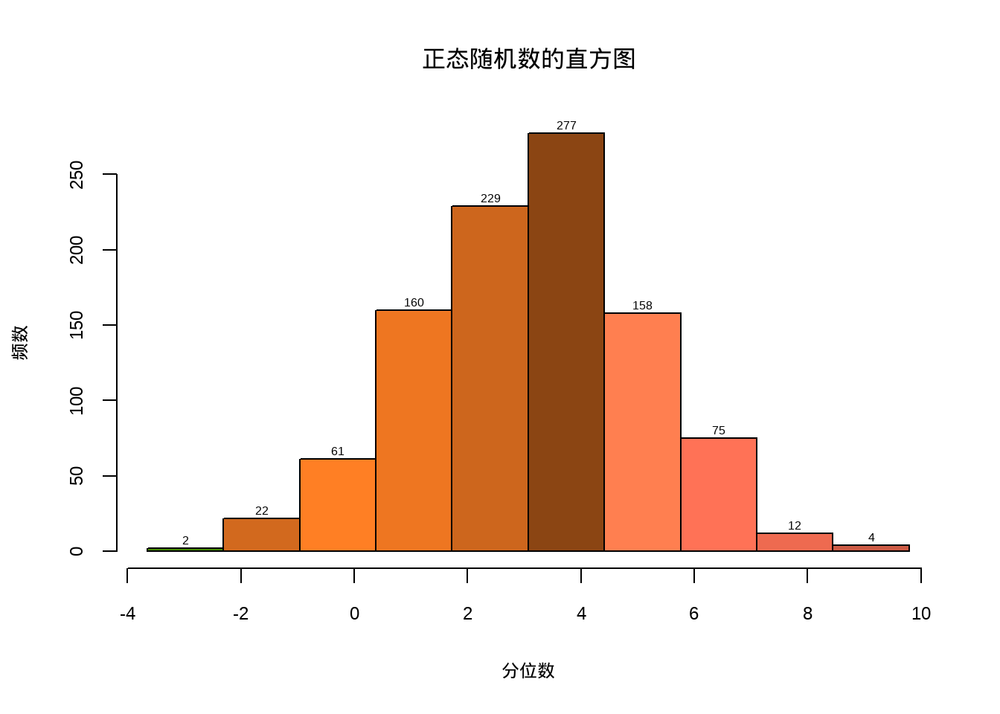
⑴绘制图3所示的柱状图，部分参数按下面的要求进行设置，其他参数按图3的样式进行设置。
颜色为2:6。
宽度为1:5。
图标题字体大小为cex.main = 2。
坐标轴标签字体大小为cex.lab=1.5。
数值轴坐标刻度字体大小为cex.axis=1.5。
分类轴坐标刻度字体大小为cex.names=1.5。
Warning: package 'ISwR' is in use and will not be installed 1940 1945 1950 1955 1960
Food and Tobacco 22.200 44.500 59.60 73.2 86.80
Household Operation 10.500 15.500 29.00 36.5 46.20
Medical and Health 3.530 5.760 9.71 14.0 21.10
Personal Care 1.040 1.980 2.45 3.4 5.40
Private Education 0.341 0.974 1.80 2.6 3.64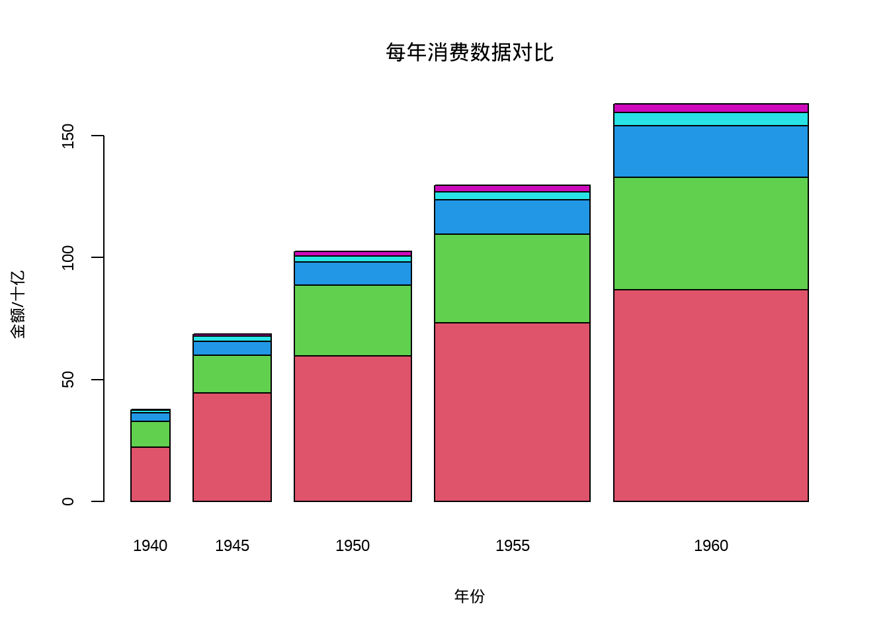
⑵ 绘制图4所示的柱状图，部分图形参数按下面的要求进行设置，其他参数按图4的样式进行设置。
颜色为2:6。
柱条间的间隔为0.2，组与组之间的间隔为3。
图标题字体大小为2。
子标题字体大小为1.5。
数值轴坐标刻度字体大小为1.2。
分类轴坐标刻度字体大小为 1.2。
y轴使用对数坐标。

⑴ 按图5的样式绘制柱状图，数据来自VADeaths(弗吉尼亚死亡率数)，部分图形参数的设置规则如下：
柱条边框颜色为2:5；
每英寸填充20条斜线，斜线的倾角分别为25，50，75，100度；
填充线条的颜色为colors()返回值中第44到47号颜色，即colors()[44:47]；
图例的名称为VADeaths的变量名；
图标题字体大小为 2；
数值轴坐标刻度字体大小为1.2；
分类轴坐标刻度字体大小为1.2；
坐标轴标签字体为1.2。
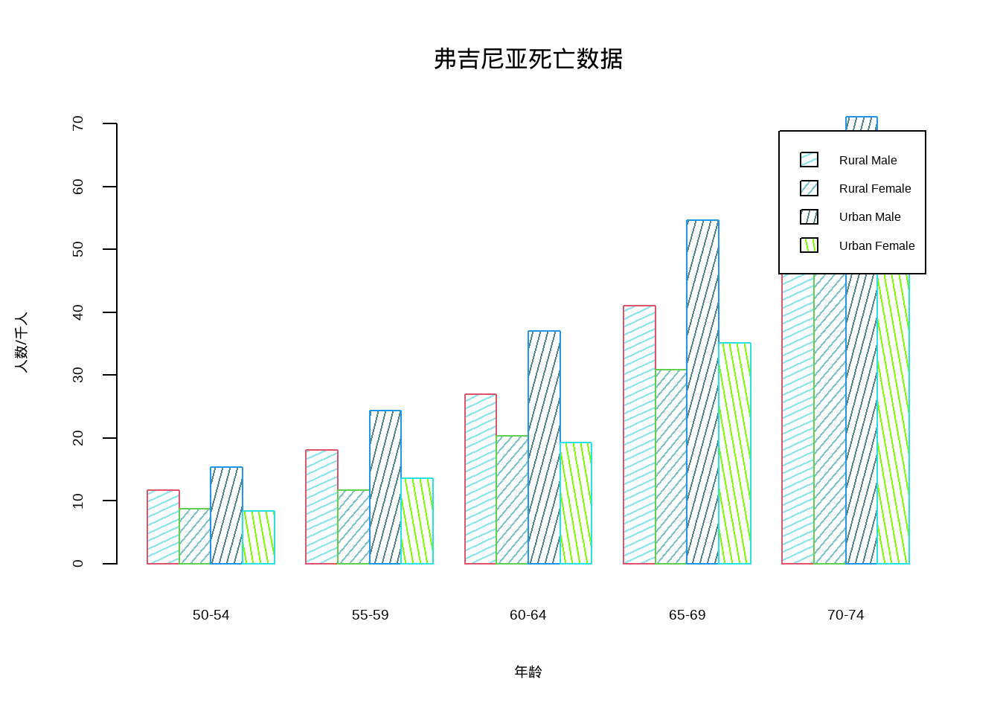
⑵ 按图6的样式绘制柱状图，数据来源于UCBAdmissions(伯克利分校招生数)。
先将数据转换数据框。
把Gender为Male的记录提取出来，存储到变量df.m中。
绘制数据框df.m中Freq数据，要求以变量Dept和Admit分组，每个柱状条代表录取与未录取的人数（提示：分组用公式，即Freq ~ Admit + Dept）。
把数值轴的范围设置为0~600。
图例文本和轴标签文本按图6进行设置。
填充颜色为蓝色和绿色。
字体大小，自行设置。
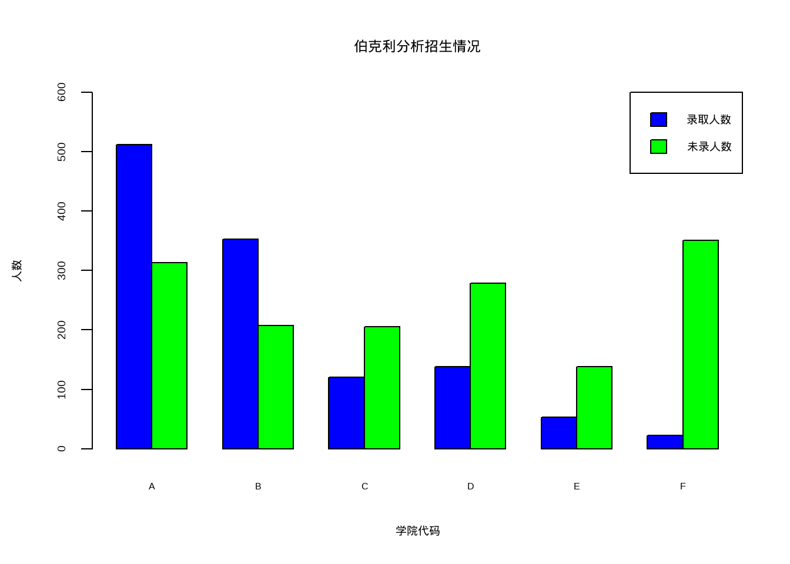
⑴ 绘制彩虹饼图
绘制向量x的饼图。
用rainbow(n)设置饼图的颜色。
边框和切片标签都置空，即边框设置为NA，切片标签设置为空字符串。
标题的字体大小为默认值，标题如图7所示。
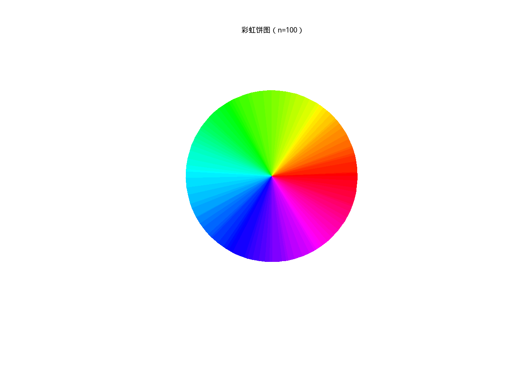
n = 100
x <- rpois(n,5)⑵ 用WorldPhones数据（各大洲电话安装使用数据）绘制饼图。
提取WorldPhones中1961年前5个数据（即除非洲和中北洲外的数据），赋值给变量x。
把1961年非洲（Africa）和中北美洲（Mid.Amer）数量合并（求和），使之成为x的新的一项，且名称为“other”。
用x绘制饼图，用rainbow为每个切片设置不同的颜色（即获取6个颜色），其中rainbow中的参数s为0.4，alpha为0.6。
边框设置黑色，标题字体大小为1.5。
其它参数按图8的样式进行设置。
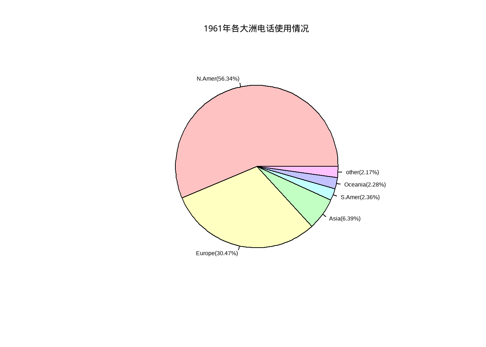
用UCBAdmissions（伯克利分校招生数据）绘制饼图，即绘制各个院系招生人数占全校招生总人数百分比的饼图。
首先需要把数据转换成数据框，然后筛选Admit为Admitted的记录，最后按院系进行分类汇总（提示：使用agreggate函数或者tapply函数）。
填充线条为每英寸50条。
颜色使用调色板中第11号到16号颜色（即col=11:16）。
边框为红色。
标题字体大小为1.5，其他参数按图9的样式进行设置。
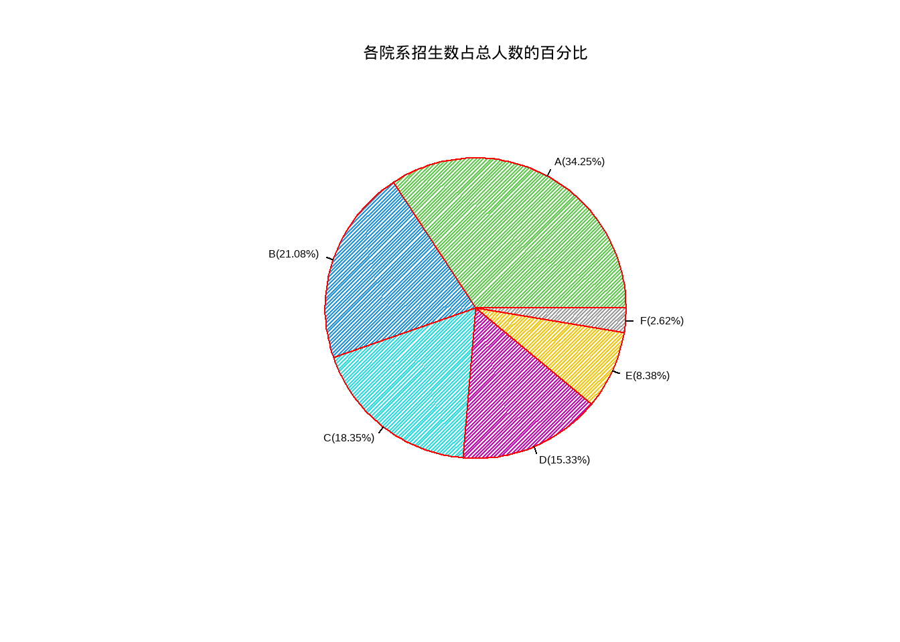
⑴ airquality是1973年纽约空气质量数据，请用boxplot绘制当Month为5, 6, 7, 8, 9时Temp（温度）变量的箱线图，即绘制5个箱子，分布对应于5-9月温度。
先删除数据框中的缺失值后，赋值给变量x，用x作为源数据绘制箱线图，在绘制过程中，不要使用函数关系作为数据。
箱子的宽度分别为1,2,3,4,5。
用rainbow函数产生5个颜色填充，其中rainbow的参数s=0.5, alpha = 0.7。
range设置为0.8。
staple线的宽度设置为0.8。
图标题的字体大小设置为1.5，其他如图10所示。
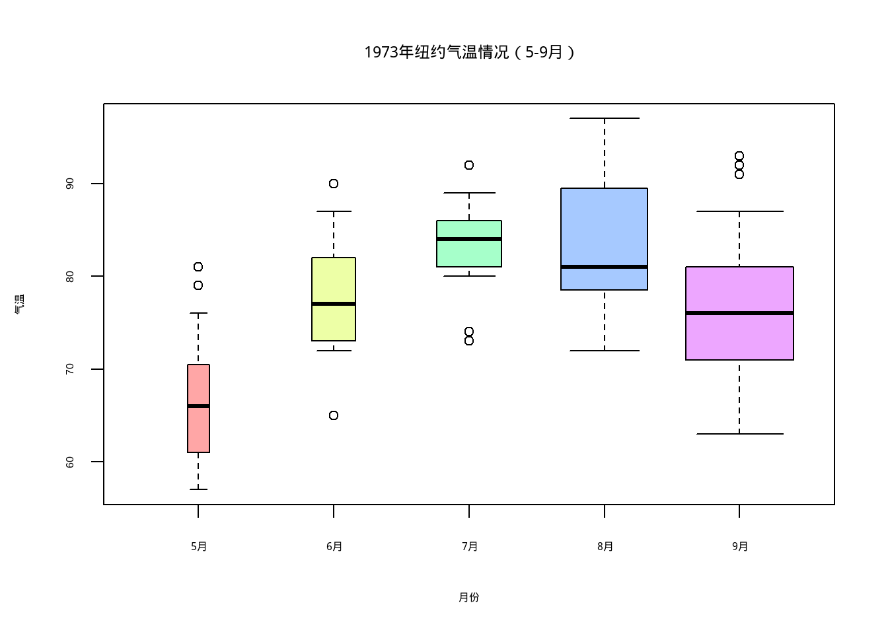
⑵ airquality是1973年纽约空气质量数据，用boxplot绘制每个月风力（即Wind）的箱线图，在绘制过程中，要求使用函数关系作为数据源。
先删除数据框airquality中的缺失值。
显示刻槽。
箱子宽度缩小一半，即缩放倍数为0.5。
填充颜色为11: 15。
边框颜色为红色。
图形标题的字体大小为1.5，其它参数按图11的样式设置。

用ISwR包中的数据集melanom（恶性黑色素瘤的生存数据）绘制箱线图，先把溃疡（ulc）列中的1替换成“yes”，2替换成“no”。
绘制不同组的黑色素瘤厚度（thick变量）的箱线图，分组变量为status和ulc，其中status表示生存状态，且1代表死于黑色素瘤，2代表存活，3代表死于其他原因；ulc表示溃疡，且yes代表有溃疡，no代表没有溃疡。
填充颜色为rainbow(6,v=0.8,alpha = 0.6)。
需要对箱子排序（即图形中组排序）。
组标签的分隔符为“–”（两个减号）。
y轴的范围为[0,1500]，其它参数按图12的样式设置
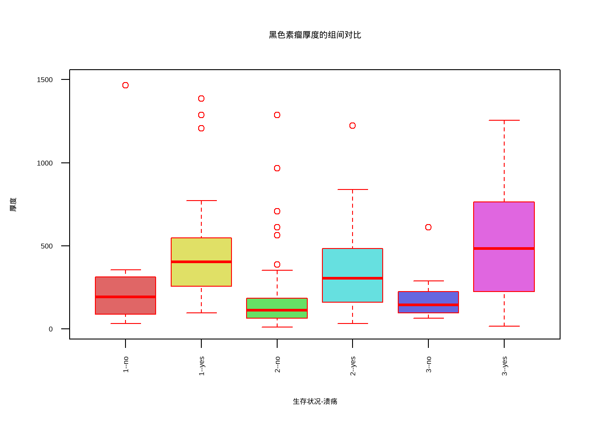
（1）用plot函数绘制airmiles数据（美国1937-1960年客运里程营收）阶梯图。
点或线条类型为下梯状（即大S）。
线宽为2（即lwd为2）。
线条颜色为”#0000FF”。
图形标题字体大小为1.2，其它参数按图13的样式设置。
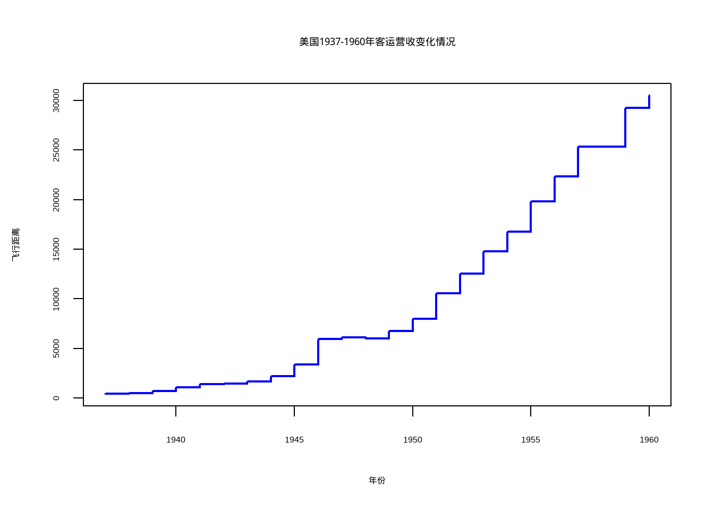
（2）用trees数据（黑樱桃树的直径，高度和体积）绘制散点图，其中x轴为直径（Girth），y轴为何种（Volume）。
点边框的颜色为1:31。
点的大小为2（即cex为2）。
点边框宽度为2（即lwd为2）。
标题字体大小为1.8。
轴标签字体大小为1.5。 轴刻度字体大小为1.2，其它参数按图14的样式设置。

产生-5到5且公差为0.05的序列x，以它作为x轴绘制密度图形。
用plot函数绘制参数为1的t分布的密度曲线。参数type设置为”l”，线宽（lwd）为2，颜色为红色，x和y轴的标签为空字符串，x和y轴的刻度为空（即设置yaxt=“n”，xaxt=“n”）。
叠加绘制下一个图形，即par(new=T)。
用plot函数绘制参数为30的t分布的密度曲线。参数type为”l”，线宽（lwd）为2，颜色为蓝色，x和y轴的标签为空字符串，x和y轴的刻度为空（即设置yaxt=“n”，xaxt=“n”）。
再叠加绘制下一个图形。
用plot函数绘制标准正态分布的密度曲线。参数type为”l”，线宽（lwd）为2，颜色为黑色，x和y轴的标签分别为“x”和“y=f(x)”，x和y轴的刻度使用默认值（即不设置这两参数），标题字体大小设置为1.8，轴标签字体大小为1.5，轴刻度字体大小为1.2。
其它参数可以参照图15的样式进行设置。
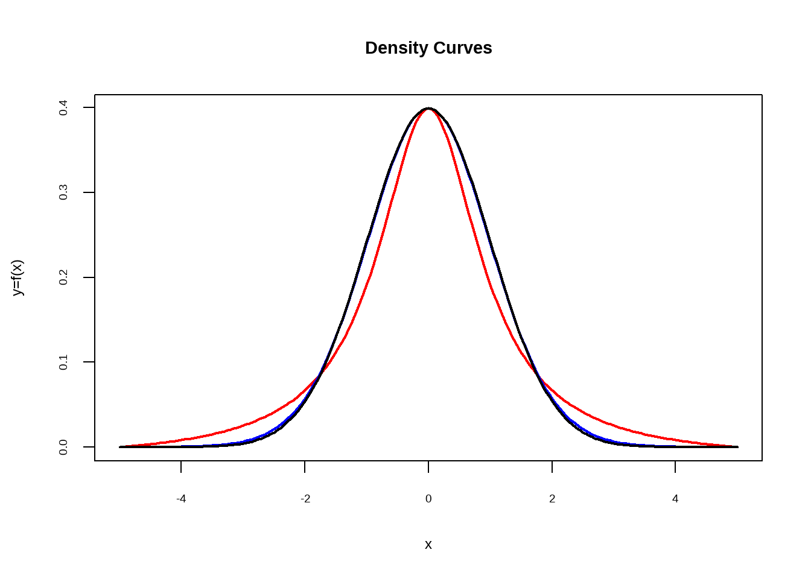
install.packages('ISwR')Warning: package 'ISwR' is in use and will not be installedlibrary(ISwR)
head(nickel.expand) agr ygr id icd exposure dob age1st agein ageout lung nasal other
1 20 1931 325 0 0 1910.500 14.0737 23.7465 25 6 0 3116
2 20 1931 273 0 0 1909.500 14.6913 24.7465 25 6 0 3116
3 20 1931 110 0 0 1909.247 14.0302 24.9999 25 6 0 3116
4 20 1931 574 0 0 1909.729 14.0356 24.5177 25 6 0 3116
5 20 1931 213 0 0 1910.129 14.2018 24.1177 25 6 0 3116
6 20 1931 546 0 0 1909.500 14.4945 24.7465 25 6 0 3116hist(nickel.expand$age1st,
breaks = 20,
col = "blue",
border = "red",
density = 20,
angle = -60,
xlim = c(10, 50),
ylim = c(0, 600),
main = "镍暴露年龄直方图",
xlab = "年龄",
ylab = "人数"
)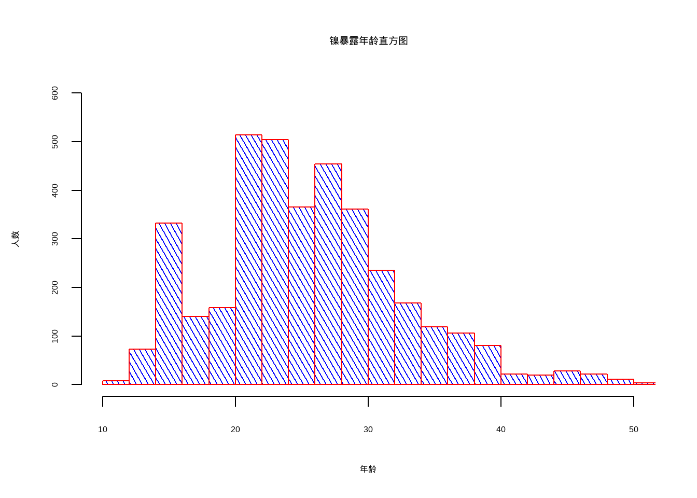
set.seed(10000)
x <- rnorm(1000,3,2)
x_range <- range(x)
min <- x_range[1]
max <- x_range[2]
breaks <- seq(from = min, to = max,length.out = 11)
freq_table <- table(cut(x,breaks = breaks,include.lowest = T))
lbs <- as.character(freq_table)
hist(x,
breaks = breaks,
col = colors()[51:60],
labels = lbs,
cex.main = 2,
cex.axis = 1.5,
cex.lab = 1.5,
main = "正态随机数的直方图",
xlab = "分位数",
ylab = "频数")install.packages('ISwR')Warning: package 'ISwR' is in use and will not be installedlibrary(ISwR)
head(USPersonalExpenditure) 1940 1945 1950 1955 1960
Food and Tobacco 22.200 44.500 59.60 73.2 86.80
Household Operation 10.500 15.500 29.00 36.5 46.20
Medical and Health 3.530 5.760 9.71 14.0 21.10
Personal Care 1.040 1.980 2.45 3.4 5.40
Private Education 0.341 0.974 1.80 2.6 3.64barplot(USPersonalExpenditure,
col = 2:6,
width = 1:5,
cex.main = 2,
cex.lab = 1.5,
cex.axis = 1.5,
cex.names = 1.5,
main = '每年消费数据对比',
xlab = '年份',
ylab = '金额/十亿')USPersonalExpenditure_t <- t(USPersonalExpenditure)
barplot(USPersonalExpenditure_t,
beside = T,
col = 2:6,
space = c(0.2,3),
cex.main = 2,
cex.lab = 1.5,
cex.axis = 1.2,
cex.names = 1.5,
log = 'y',
axisnames = T,
main = '五项消费数据对比',
xlab = '----五年数据对比----')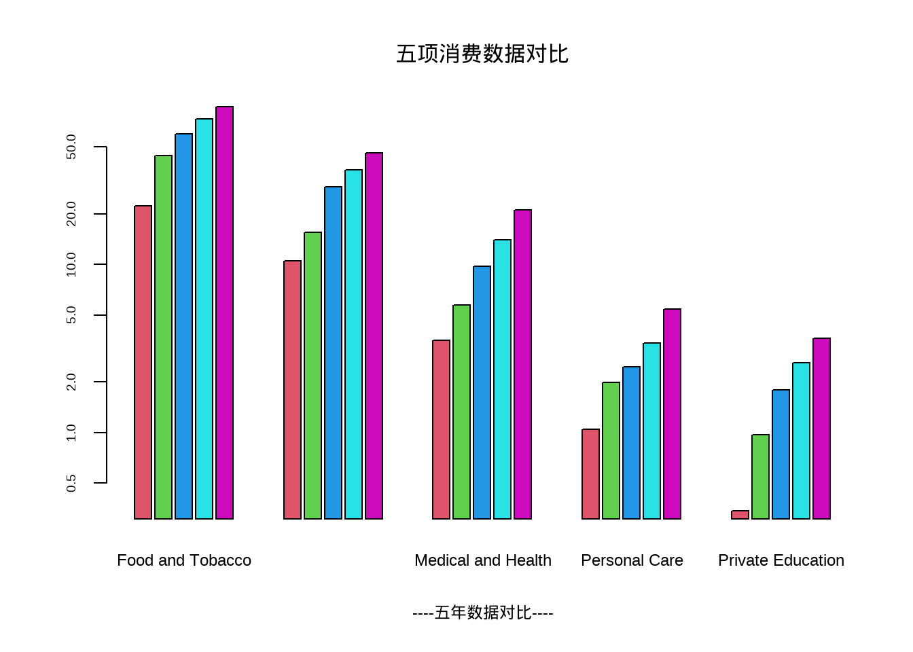
data("VADeaths")
VADeaths_t <- t(VADeaths)
barplot(VADeaths_t,
border = 2:5,
density = 20,
angle = c(25,50,75,100),
col = colors()[44:47],
legend = colnames(VADeaths),
cex.main = 2,
cex.lab = 1.2,
cex.axis = 1.2,
cex.names = 1.2,
main = '弗吉尼亚死亡数据',
xlab = '年龄',
ylab = '人数/千人',
beside = T
)data("UCBAdmissions")
df <- as.data.frame(UCBAdmissions)
df.m <- subset(df, Gender == "Male")
barplot(Freq ~ Admit + Dept,
data = df.m,
col = c("blue", "green"),
legend = c("录取人数", "未录人数"),
args.legend = list(x = "topright", cex = 1.2),
ylab = "人数",
xlab = "学院代码",
main = "伯克利分析招生情况",
cex.main = 1.5,
cex.lab = 1.2,
cex.axis = 1.2,
ylim = c(0, 600),
beside = T
)n = 100
x <- rpois(n,5)
pie(x,
col = rainbow(n),
border = NA,
labels = rep('',n),
main = '彩虹饼图（n=100）'
)data("WorldPhones")
data_1961 <- WorldPhones['1961',]
x<- data_1961[1:5]
other <- sum(data_1961['Africa'],data_1961['Mid.Amer'])
names(other) <- 'other'
x <- c(x,other)
proportions <- round(x / sum(x) * 100, 2)
labels <- paste(names(x), "(", proportions, "%)", sep = "")
pie(x,
col = rainbow(length(x), s = 0.4, alpha = 0.6),
border = 'black',
main = '1961年各大洲电话使用情况',
cex.main = 1.5,
labels = labels)data("UCBAdmissions")
df <- as.data.frame(UCBAdmissions)
df_admitted <- subset(df, Admit == "Admitted")
admitted_summary <- aggregate(Freq ~ Dept, data = df_admitted, sum)
x <- admitted_summary$Freq
pie(x,
col = 11:16,
density = 50,
border = "red",
labels = paste(admitted_summary$Dept, "(", round(x / sum(x) * 100, 2), "%)", sep = ""),
main = "各院系招生数占总人数的百分比",
cex.main = 1.5
)data("airquality")
x <- na.omit(airquality)
x <- subset(x, Month %in% c(5, 6, 7, 8, 9))
colors <- rainbow(5, s = 0.5, alpha = 0.7)
boxplot(Temp ~ Month,
data = x,
col = colors,
width = c(1, 2, 3, 4, 5),
range = 0.8,
staplewex = 0.8,
main = "1973年纽约气温情况（5-9月）",
cex.main = 1.5,
xlab = "月份",
ylab = "气温",
names = c("5月", "6月", "7月", "8月", "9月")
)airquality_clean <- na.omit(airquality)
boxplot(Wind ~ Month,
data = airquality_clean,
notch = T,
width = rep(0.5, 5),
horizontal = T,
col = 11:15,
border = 'red',
main = '1973年纽约风力情况(5-9月）',
cex.main = 1.5,
xlab = '风力',
ylab = "月份",
names = c("5月", "6月", "7月", "8月", "9月")
)Warning in (function (z, notch = FALSE, width = NULL, varwidth = FALSE, : some
notches went outside hinges ('box'): maybe set notch=FALSE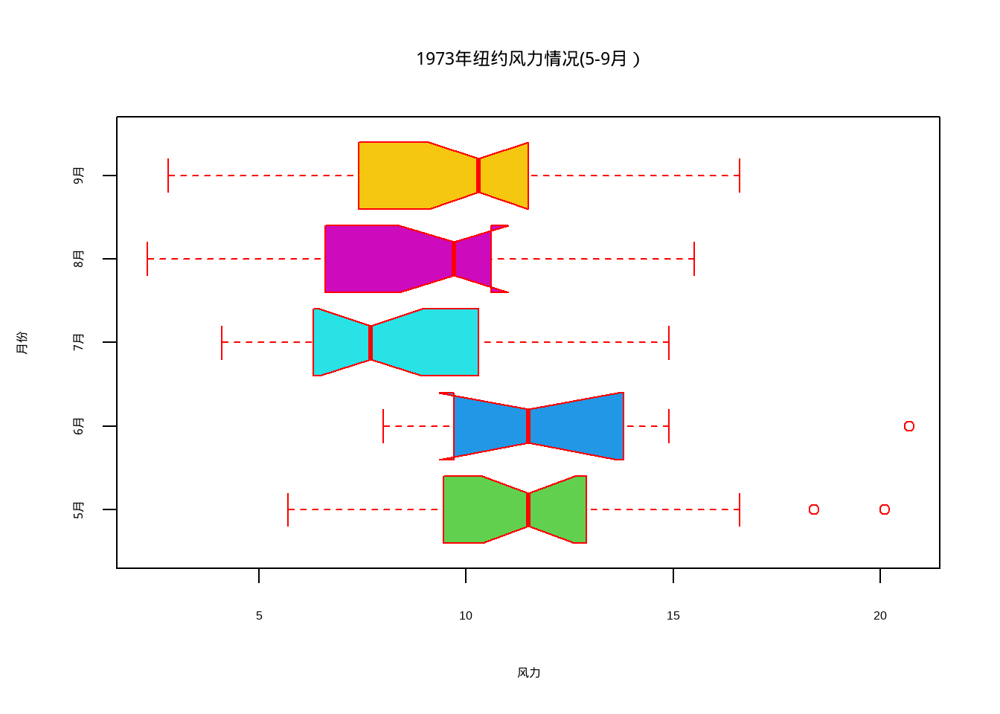
install.packages('ISwR')Warning: package 'ISwR' is in use and will not be installedlibrary(ISwR)
data("melanom")
melanom$ulc <- factor(melanom$ulc, levels = c(1, 2), labels = c("yes", "no"))
melanom$group <- interaction(melanom$status, melanom$ulc, sep = "--")
desired_order <- c("1--no", "1--yes", "2--no", "2--yes", "3--no", "3--yes")
melanom$group <- ordered(melanom$group, levels = desired_order)
boxplot(thick ~ group,
data = melanom,
col = rainbow(6,v=0.8,alpha = 0.6),
main = "黑色素瘤厚度的组间对比",
ylab = "厚度",
xlab = "生存状况-溃疡",
ylim = c(0, 1500),
las = 2,
outcol = "red",
border = 'red',
medcol = 'red'
)data("airmiles")
plot(airmiles,
type = "s",
lwd = 2,
col = "#0000FF",
main = "美国1937-1960年客运营收变化情况",
cex.main = 1.2,
xlab = "年份",
ylab = "飞行距离"
)data('trees')
plot(trees$Girth, trees$Volume,
pch = 21,
col = 1:31,
bg = "white",
cex = 2,
lwd = 2,
main = "黑樱桃的体积和直径的关系",
cex.main = 1.8,
xlab = "直径",
ylab = "体积",
cex.lab = 1.5,
cex.axis = 1.2
)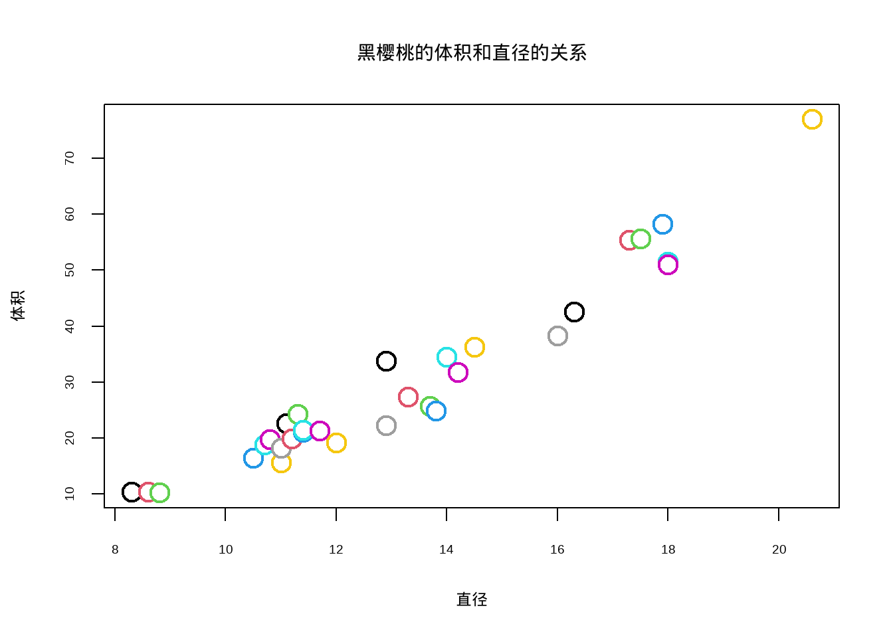
x <- seq(-5, 5, by = 0.05)
plot(x, dt(x, df = 1),
type = "l",
lwd = 2,
col = "red",
xlab = "",
ylab = "",
xaxt = "n",
yaxt = "n",
main = ""
)
par(new = TRUE)
plot(x, dt(x, df = 30),
type = "l",
lwd = 2,
col = "blue",
xlab = "",
ylab = "",
xaxt = "n",
yaxt = "n",
main = ""
)
par(new = TRUE)
plot(x, dnorm(x),
type = "l",
lwd = 2,
col = "black",
xlab = "x",
ylab = "y=f(x)",
main = "Density Curves",
cex.main = 1.8,
cex.lab = 1.5,
cex.axis = 1.2
)